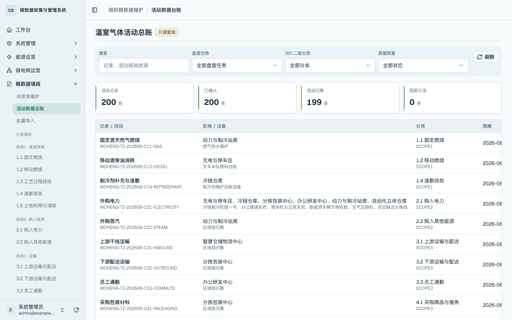
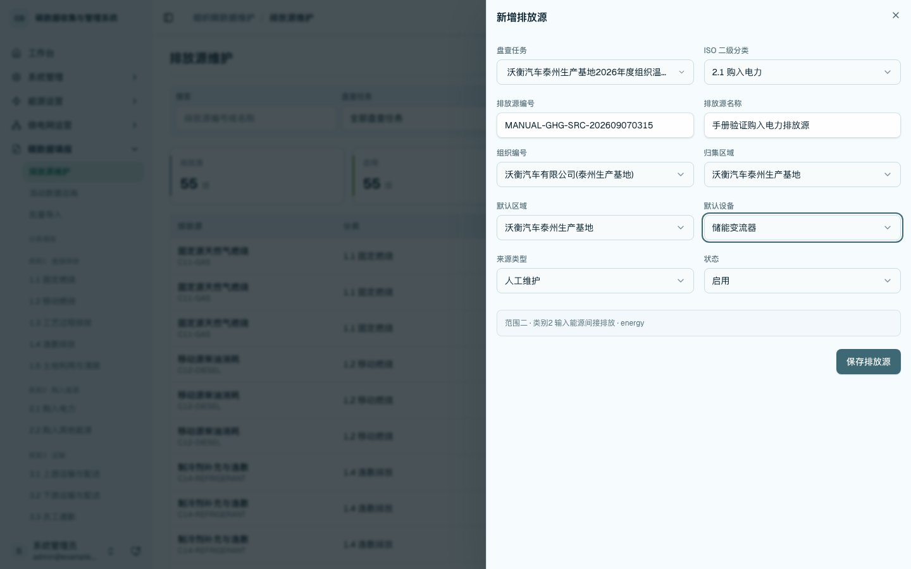
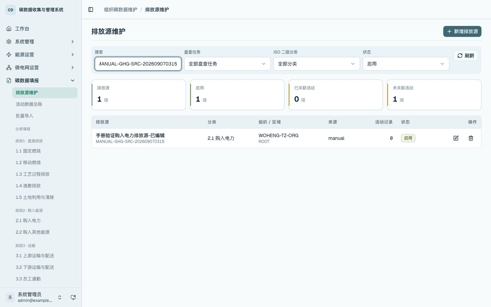
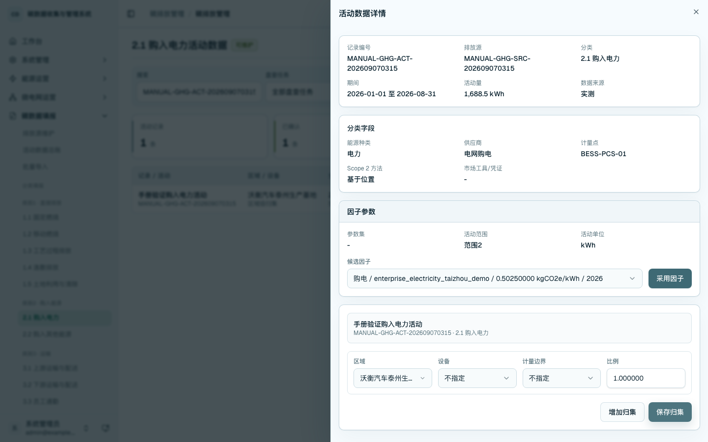
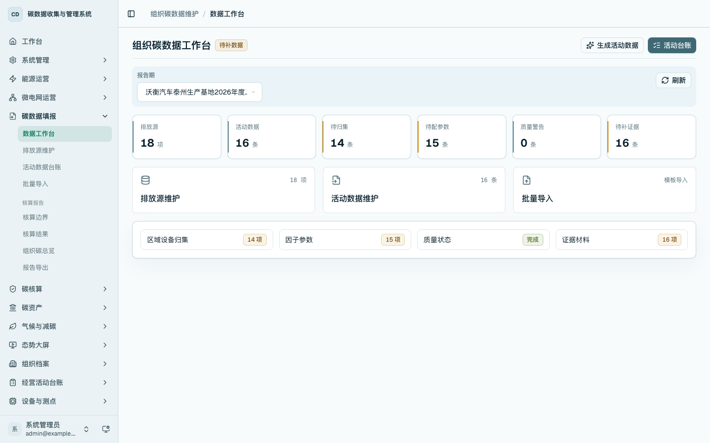
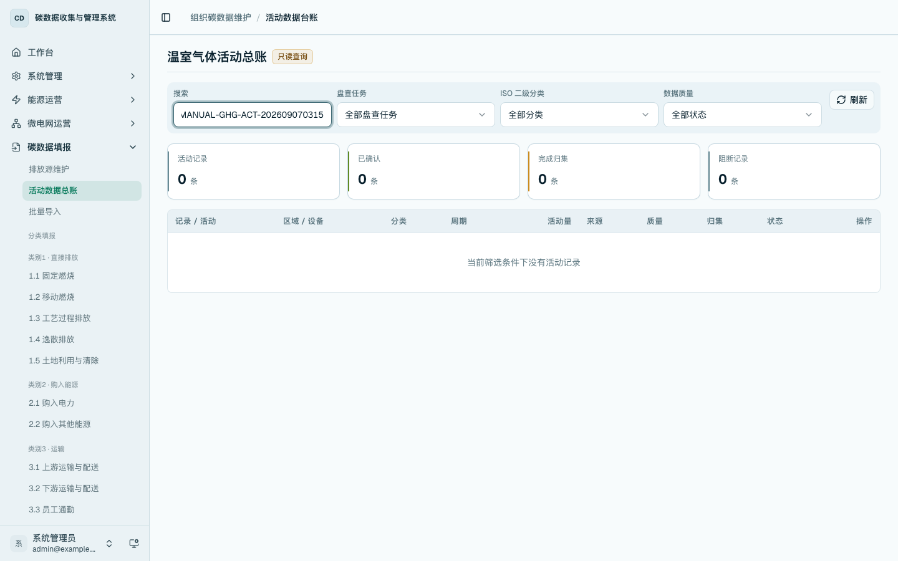

组织碳核算：排放源与活动数据维护
本章用于维护组织温室气体盘查的核心活动数据。使用顺序为：先维护排放源，再按 ISO 14064 二级分类进入分类填报页面维护活动记录；活动数据总账用于跨分类只读查询和详情追溯；批量导入作为分类填报页面的批量维护能力使用。
查看活动数据总账
进入 /carbon-mgmt/activities。页面展示当前租户下的组织碳活动数据，支持按盘查任务、ISO 二级分类、数据质量和关键词筛选。总账定位为只读查询，适合核算前检查数据范围、归集状态和质量状态。

新增排放源
进入 /carbon-mgmt/sources，点击「新增排放源」。填写盘查任务、ISO 二级分类、排放源编号、排放源名称、组织、归集区域、默认区域、默认设备、来源类型和状态。排放源用于明确活动数据对应的排放活动、设施或外部活动对象。

编辑排放源
在排放源列表中按编号或名称搜索目标排放源，点击编辑，调整排放源名称、分类、区域设备挂载或状态。保存后列表回显更新后的排放源信息和关联活动记录数量。

新增活动数据
进入 /carbon-mgmt/category/2.1 等分类填报页面，点击「新增本类活动」。选择排放源后，系统带出盘查任务、组织、区域和 ISO 分类。填写记录编号、活动名称、报告期、活动量、单位、数据来源、分类字段、测量方法和备注。不同 ISO 分类会显示对应的动态字段，例如购入电力需要维护能源种类、供应商、计量点和 Scope 2 方法。

查看详情并维护归集
在活动数据台账点击目标记录，打开活动数据详情。详情页展示记录编号、排放源、分类、期间、活动量、数据来源和分类字段，并在同一页面维护区域、设备、计量边界和归集比例。保存归集后，活动数据可按区域、设备和计量边界参与后续核算与查询。

编辑活动数据
在活动数据台账点击编辑，调整活动名称、活动量、单位、来源、分类字段、测量方法或备注。保存后台账回显新的活动量、质量状态、归集状态和记录状态。

生成活动数据
组织碳活动数据可从能源事实和经营活动台账按报告期幂等生成。生成完成后进入活动数据总账或对应分类填报页面，核对新增、更新、跳过和失败结果，确认数据已进入本期活动台账。

删除活动数据和排放源
未被核算结果或报告引用的活动数据可删除。活动数据删除后，再删除未关联活动数据的排放源。删除后按记录编号或排放源编号查询，列表不再显示验证记录。

ISO 分类填报
ISO 14064-1 类别 1-6 在侧边栏「分类填报」下提供二级入口，例如 /carbon-mgmt/category/1.1、/carbon-mgmt/category/2.1、/carbon-mgmt/category/3.3。分类页面负责本类活动数据新增、编辑、详情归集、模板下载和本类数据导入；总账页面负责只读查询和跨分类追溯。